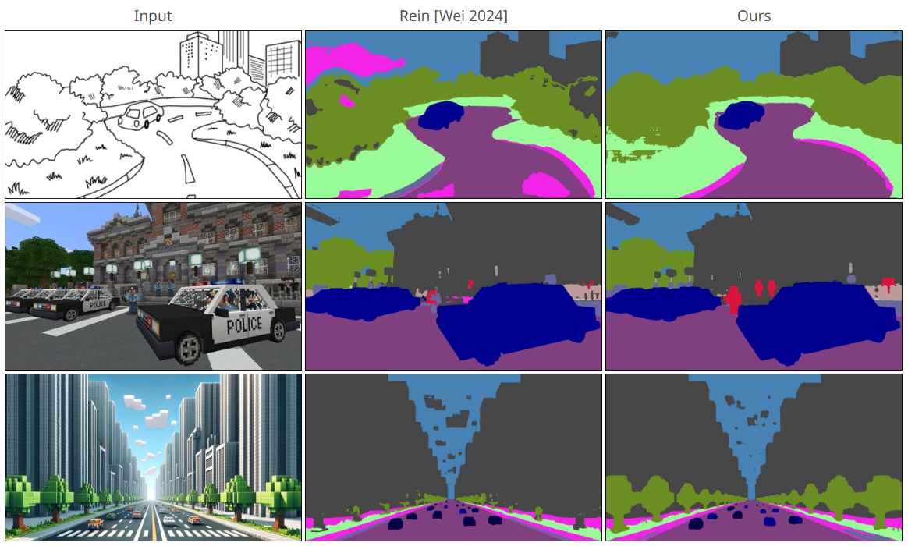
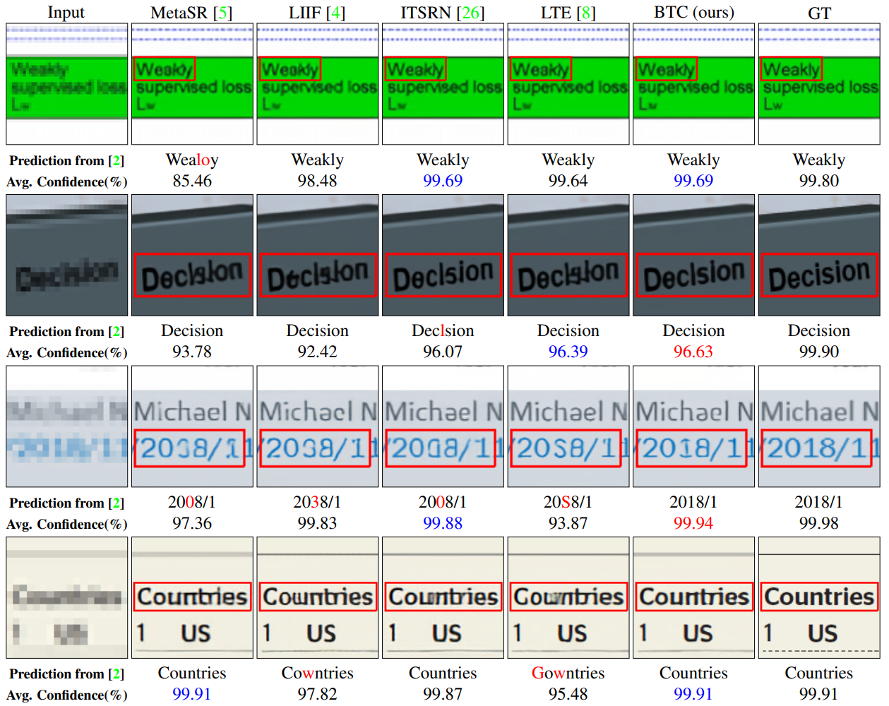

|
Byeonghyun Pak
I am a first lieutenant in the Republic of Korea Army (ROKA),
currently working as a research officer at the Agency for Defense Development (ADD),
the Korean counterpart to the U.S. DARPA. My research interests lie in Machine Learning (ML) and Computer Vision (CV).
In line with these interests, I am involved in the development of various defense CV systems integrated with ML models.
Email / CV (TBD) / Google Scholar / Github |

|
Publications |
|
 |
Textual Query-Driven Mask Transformer for Domain Generalized Segmentation
Byeonghyun Pak*, Byeongju Woo*, Sunghwan Kim*, Dae-hwan Kim, Hoseong Kim ECCV, 2024 project page / paper (TBD) We introduced a domain-generalized semantic segmentation approach. Our method effectively handles domain shifts by harnessing domain-invariant semantic knowledge from text embeddings of vision-language models (e.g., CLIP). |
|
 |
B-spline Texture Coefficients Estimator for Screen Content Image Super-Resolution
Byeonghyun Pak*, Jaewon Lee*, Kyong Hwan Jin CVPR, 2023 (Highlight) project page (TBD) / paper We proposed an Implicit Neural Representation (INR) using 2D B-splines for high-quality Screen Content Image (SCI) super-resolution. Our method effectively handles the edges and textures of SCIs, minimizing information distortions across various resolutions. |
|
Credits to Jon Barron for this website's template. |